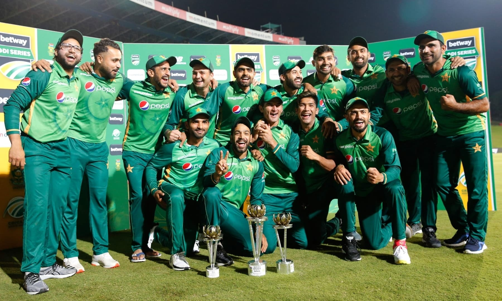

Home
Football News
Hockey
Cricket News

India 244 for 4 (Kohli 100*, Iyer 56, Afridi 2-74) beat Pakistan 241 all out
(Shakeel 62, Kuldeep 3-40, Hardik 2-31) by six wickets
In the biggest match of the year, with his mortality showing more than it ever used to, Virat Kohli showed he's
still got it, that maybe, just maybe, the little he's lost wasn't going to define him.

The visa issue of Pakistan cricket team has been sorted. However whether the fans
can travel across the border to watch matches is still not clear," an Apex Council member told Press Trust of
India on conditions of anonymity, according to the report.